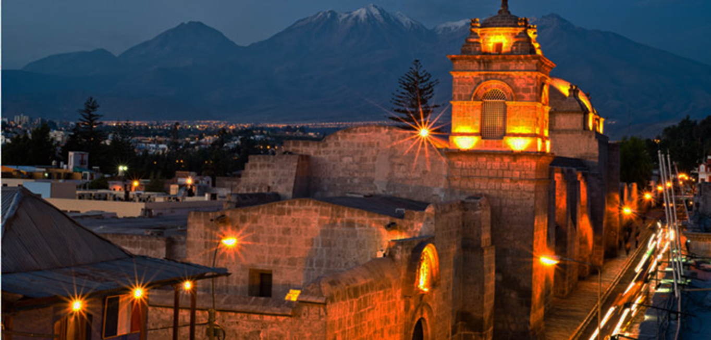
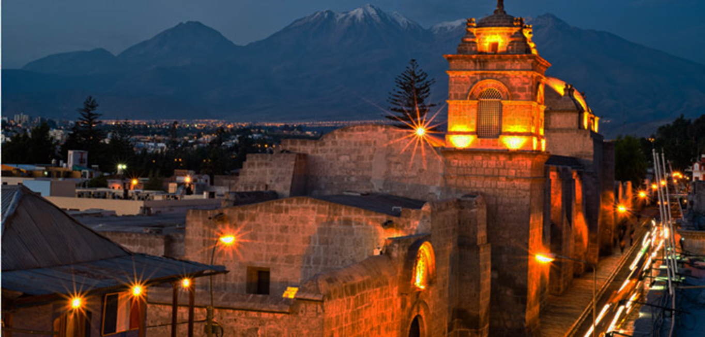

Productos Que Ofrecemos
Velas de Cera
Las velas de cera vuelven a estar de moda. Actualmente, este tipo de vela es una de las más consumidas debido a que están elaboradas de forma natural, con cera de abeja, en lugar de la habitual parafina.
Velas Decorativas
Dentro de los tipos de velas más comunes y usados destacamos, sin lugar a dudas, las velas decorativas ya que son un tipo de objeto que se usa en los interiores de los hogares para darle un toque más cálido y acogedor a cualquier estancia.

Velas Aromaticas
Además de decorar, muchas velas también pueden crear un espacio relajante y perfecto para evadirte del día a día. Las velas aromáticas cumplen, exactamente, esta función.

Velas Esotericas
Pero, además de decorar y ambientar un hogar, las velas también pueden usarse con fines místicos. De hecho, en las tradiciones más antiguas se realizaban hechizos y tratamientos espirituales con velas esotéricas que tenían funcionalidades mágicas.

Velas Talladas
Al hacer una vela de gran tamaño con un técnica de capa por capa en diferentes colores, los artesanos tienen una base para trabajar el arte de tallar velas.

Velas Marmoleadas
Las velas marmoleadas pueden tener cualquier forma, su encanto viene dado por su coloración en gradientes disparejos. Suelen usarse colores opacos para lograr una tonalidad natural, así las velas parecen fabricadas en piedras de colores.